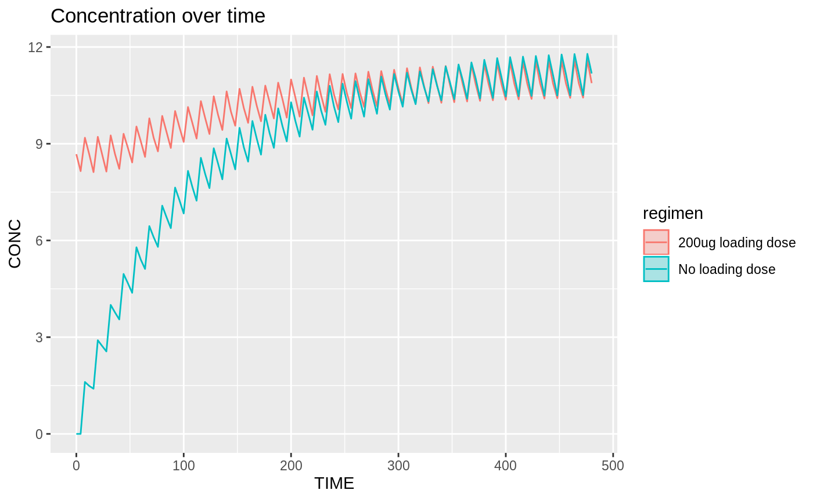

##
## Attaching package: 'tdmore'## The following object is masked from 'package:stats':
##
## optimize##
## Attaching package: 'dplyr'## The following objects are masked from 'package:stats':
##
## filter, lag## The following objects are masked from 'package:base':
##
## intersect, setdiff, setequal, union##
## Attaching package: 'purrr'## The following object is masked from 'package:tdmore':
##
## flattenWe use an example model from literature.
# Model taken from literature: Soulele, K., et al. # 'Population pharmacokinetics of fluticasone propionate/salmeterol using two different dry powder inhalers.' # European Journal of Pharmaceutical Sciences 80 (2015): 33-42." myModel <- nlmixr::nlmixrUI(function(){ ini({ TVKa <- 3.87 TVCL <- 659 # L/h TVV1 <- 56900 # L TVV2 <- 5550 # L TVQ <- 259 # L/h EKa ~ 0.04507129 # 0.2123**2 ECL ~ 0.1535856 # 0.3919**2 EV1 ~ 0.09223369 # 0.3037**2 EV2 ~ 0.208301 # 0.4564**2 EQ ~ 0.1015697 # 0.3187**2 EPS_ADD <- 1.91 EPS_PROP <- 0.117 }) model({ Ka <- TVKa * exp(EKa) CL <- TVCL * exp(ECL) V1 <- TVV1 * exp(EV1) V2 <- TVV2 * exp(EV2) Q <- TVQ * exp(EQ) K12 <- Q/V1 K21 <- Q/V2 d/dt(center) = - CL/V1 * center - K12*center + K21 * periph d/dt(periph) = K12*center - K21 * periph CONC = center / V1 * 1000 CONC ~ prop(EPS_PROP) + add(EPS_ADD) }) }) m1 <- tdmore(myModel)
Below, we compare the standard treatment regimen of 88mcg twice-daily to a treatment regimen with a loading dose.
regimenA <- data.frame( #only maintenance dose TIME=sort( c(8+(0:20)*24, 20+(0:20)*24) ), #at 08:00 and 20:00 AMT=88 ) regimenB <- rbind( data.frame(TIME=0, AMT=500), #loading dose regimenA #maintenance dose ) # predict generates N samples of a tdmorefit with uncertainty # If we use the population fit, then this will represent a sample across the population. # I.e. N virtual subjects # In a model with covariates, you should either sample the covariates from an external database, # or generate them from a distribution. N <- 300 population <- estimate(m1) resultA <- predict(population, newdata=seq(0, 20*24, by=4), regimen=regimenA, se=T, level=NA, mc.maxpts=N) resultB <- predict(population, newdata=seq(0, 20*24, by=4), regimen=regimenB, se=T, level=NA, mc.maxpts=N) result <- rbind( resultA %>% mutate(regimen="No loading dose"), resultB %>% mutate(regimen="200ug loading dose") ) ggplot(result, aes(x=TIME, y=CONC, color=regimen, fill=regimen)) + stat_summary(fun.data=median_hilow, geom="ribbon", alpha=0.3) + stat_summary(fun.y=median, geom="line") + labs(title="Concentration over time")
## Warning: `fun.y` is deprecated. Use `fun` instead.## Warning: Computation failed in `stat_summary()`:
## Hmisc package required for this function
library(tdmore) library(dplyr) library(purrr) library(tidyr) library(ggplot2) set.seed(1234) # Model taken from literature: Soulele, K., et al. # 'Population pharmacokinetics of fluticasone propionate/salmeterol using two different dry powder inhalers.' # European Journal of Pharmaceutical Sciences 80 (2015): 33-42." myModel <- nlmixr::nlmixrUI(function(){ ini({ TVKa <- 3.87 TVCL <- 659 # L/h TVV1 <- 56900 # L TVV2 <- 5550 # L TVQ <- 259 # L/h EKa ~ 0.04507129 # 0.2123**2 ECL ~ 0.1535856 # 0.3919**2 EV1 ~ 0.09223369 # 0.3037**2 EV2 ~ 0.208301 # 0.4564**2 EQ ~ 0.1015697 # 0.3187**2 EPS_ADD <- 1.91 EPS_PROP <- 0.117 }) model({ Ka <- TVKa * exp(EKa) CL <- TVCL * exp(ECL) V1 <- TVV1 * exp(EV1) V2 <- TVV2 * exp(EV2) Q <- TVQ * exp(EQ) K12 <- Q/V1 K21 <- Q/V2 d/dt(center) = - CL/V1 * center - K12*center + K21 * periph d/dt(periph) = K12*center - K21 * periph CONC = center / V1 * 1000 CONC ~ prop(EPS_PROP) + add(EPS_ADD) }) }) m1 <- tdmore(myModel) regimenA <- data.frame( #only maintenance dose TIME=sort( c(8+(0:20)*24, 20+(0:20)*24) ), #at 08:00 and 20:00 AMT=88 ) regimenB <- rbind( data.frame(TIME=0, AMT=500), #loading dose regimenA #maintenance dose ) # predict generates N samples of a tdmorefit with uncertainty # If we use the population fit, then this will represent a sample across the population. # I.e. N virtual subjects # In a model with covariates, you should either sample the covariates from an external database, # or generate them from a distribution. N <- 300 population <- estimate(m1) resultA <- predict(population, newdata=seq(0, 20*24, by=4), regimen=regimenA, se=T, level=NA, mc.maxpts=N) resultB <- predict(population, newdata=seq(0, 20*24, by=4), regimen=regimenB, se=T, level=NA, mc.maxpts=N) result <- rbind( resultA %>% mutate(regimen="No loading dose"), resultB %>% mutate(regimen="200ug loading dose") ) ggplot(result, aes(x=TIME, y=CONC, color=regimen, fill=regimen)) + stat_summary(fun.data=median_hilow, geom="ribbon", alpha=0.3) + stat_summary(fun.y=median, geom="line") + labs(title="Concentration over time") ## NA